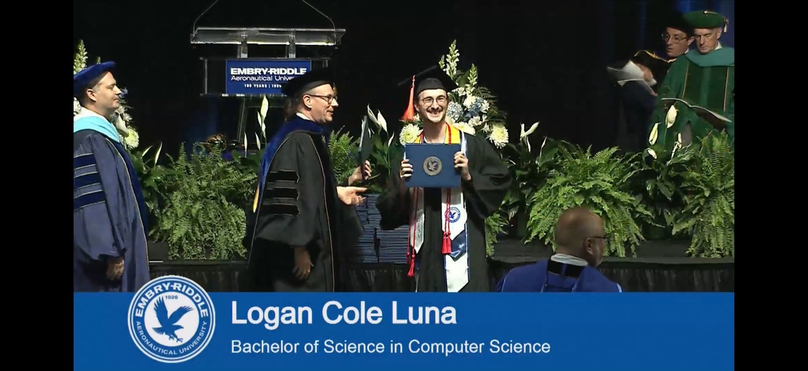
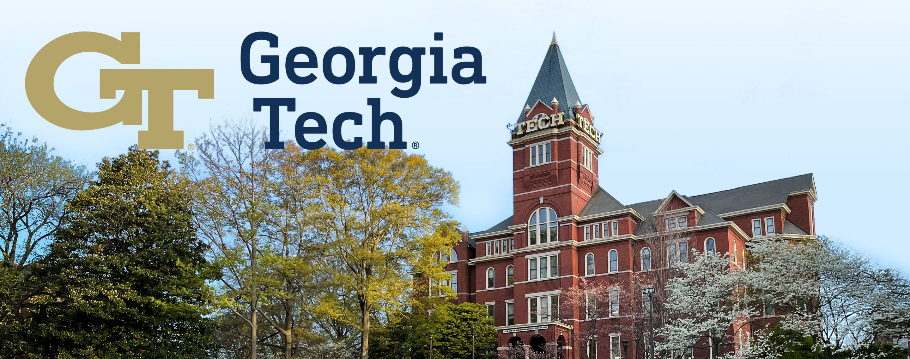

- M.S. Computer Science, Georgia Institute of Technology
- B.S. Computer Science, Embry-Riddle Aeronautical University (Honors)
- DoW SMART Scholar
Brief Bio
I am a B.S. Computer Science graduate (Honors Program, magna cum laude) with a minor in Applied Mathematics from Embry-Riddle Aeronautical University (May 2026, cumulative GPA 3.85/4.00), and Embry-Riddle's Outstanding Undergraduate in Computer Science (2025 & 2026). In August 2026, I began an M.S. in Computer Science (Artificial Intelligence specialization, thesis track) at the Georgia Institute of Technology. My research is in AI for Mathematical Reasoning (AI4Math): how semantically informative training signals can be quantified and incorporated into the training and generation of mathematical reasoning models.

At Georgia Tech's Reasoning and Learning Group under Dr. Vijay Ganesh, I contribute to AIProver, an agentic system that post-trains an open-weight LLM on graded verifier rewards to auto-formalize research mathematics. I built its RL pipeline and reward, its distillation pipeline and dataset, and its Semantic Alignment Model. I also coordinate Georgia Tech's Foundations of AI Seminar Series. As a DoW SMART Scholar and Scientist Intern (Active Secret clearance) at NSWCDD, I build real-time video detection and tracking systems. At Embry-Riddle, I researched RL-based satellite collision avoidance in the Agile Research Group and led autonomy software for the Autonomous Maritime Robotics Association's RoboSub team.

Education
-
Georgia Institute of Technology, Atlanta, GA
M.S. Computer Science, Specialization in Artificial Intelligence (Thesis Track)
August 2026 – Expected December 2027 -
Embry-Riddle Aeronautical University, Daytona Beach, FL
B.S. Computer Science (Honors Program, magna cum laude), Minor in Applied Mathematics
August 2022 – May 2026 · GPA 3.85/4.00 · Outstanding Undergraduate in Computer Science
Professional Experience
-
Naval Surface Warfare Center Dahlgren Division (NSWCDD)
Scientist Intern, Beam and Optic Control for High Energy Weapons, 2024–Present · Active Secret Clearance.
Re-architected YOLO into a video detector with a motion cross-attention stream that fuses frame-difference cues into the backbone at three scales, substantially improving small, low-visibility object detection in clutter (2026). Designed a lightweight temporal feature approach for stability when targets appear infrequently (2025). Built a real-time tracking pipeline with YOLO, ORB keypoint matching, homography-based optical flow, re-identification, and Kalman filtering. -
Reasoning and Learning Group, Georgia Institute of Technology
Researcher, AI4Math / Auto-formalization, 2025–Present · Group Lead: Dr. Vijay Ganesh.
Contribute to AIProver, which lifts pass@4 semantic correctness on research-math auto-formalization from 15.7% to 36.7% (above GPT-5.6-Sol and Codex), and from 41.9% to 79.8% as a Claude Code skill. Extended RLSF to multi-turn auto-formalization with GRPO and designed a graded reward ladder (type correctness, completeness, semantic correctness, length fidelity); extended BEq+ to score one-directional implication; built the distillation pipeline over 57.9k instances (16,570 Mathlib and 6,799 Mizar examples); trained a Semantic Alignment Model (cross-entropy + InfoNCE, LoRA on a 119B MoE), raising matched NL–Lean cosine similarity from 0.11 to 0.75. -
Agile Research Group, Embry-Riddle Aeronautical University
Researcher, Satellite Trajectory Optimization, 2024–2026 · Group Lead: Dr. Omar Ochoa.
Developed a PPO-based RL framework for fuel-aware satellite collision avoidance, reaching 97.5% avoidance success over 1,000 deterministic GEO episodes; studied reward shaping and curriculum learning; generalized the group's sensor analysis practice into SensorWF, a FAIR workflow framework.
Teaching, Mentoring & Service
-
Foundations of AI Seminar Series,
Georgia Institute of Technology, 2026–Present.
Seminar Coordinator (faculty organizers: Dr. Vijay Ganesh, Dr. Yingyan (Celine) Lin). Run the series end to end and host visiting speakers, including Young Jin Kim (Microsoft Research) and Daniel Kroening (Amazon). -
Workshops, Embry-Riddle Aeronautical University, 2023–2026.
Hosted with AMRA: Competitive Fellowship Applications (~20 attendees; 6 went on to receive DoW SMART Scholarships), Introduction to Programming (~30 attendees), and Introduction to Machine Learning (~10 attendees). -
Undergraduate Research Mentoring, Agile Research Group, 2025–2026.
Mentored two undergraduate researchers through a full research cycle, from first exposure to research to co-authorship on a peer-reviewed conference paper (SensorWF). -
Peer Mentor, Office of Undergraduate Research, Embry-Riddle, 2023–2024.
Mentored two aerospace engineering students; outcomes included a research lab position and an engineering internship at Boeing. -
Software Department Head,
RoboSub Team, Autonomous Maritime Robotics Association (AMRA), 2022–2026.
Led AUV autonomy software (computer vision, sonar processing, ML-based decision-making); 16th of 52 schools internationally; developed the team's sonar work into a peer-reviewed publication.
Skills
- Programming: Python, C/C++, Java
- ML/CV: PyTorch, TensorFlow, OpenAI Gym, SHAP, OpenCV, YOLO
- Mathematics: Linear Algebra, Calculus I–III, Differential Equations, Probability & Statistics, Discrete Mathematics, Optimization
- Tools: Git, Docker, Linux, NVIDIA Isaac Lab, Lean
Curriculum Vitae
Full CV available here: Download CV (PDF)